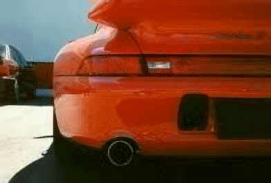

Porsche 911 Turbo S


Specs (reg/S version)
Price |
$115,000 / $150,000 |
Top Speed |
180mph / 186mph |
Acceleration |
|
Engine |
|
0-30mph |
1.5sec(!!) / N/A |
Type |
Twin Turbo Flat-6, 12valve SOHC / same |
0-60mph |
3.8sec / 3.6sec |
Displacement |
3.6L(3600cc) / same |
0-100 |
8.7sec / N/A |
Power |
408hp@5750rpm / 424hp@5750 |
1/4 mile |
12.3sec/114.1mph / 11.9sec/116.6mph |
Torque |
399 lbs-ft@4500rpm / 400 lbs-ft@4500rpm |
Weight |
3,323 lbs / N/A |
Handling |
|
Gas mileage |
|
Skidpad |
1.00g / .95g |
City |
13mpg / same |
600ft slalom |
69.6mph / 69.7mph |
Highway |
19mpg / same |
Powertrain |
Rear engined, All wheel drive, 6 speed manual / same |
(? = incomplete data or unverified info, N/A = info Not Available)
Beyond the specs:
It was the ultimate Porsche, the car that molded the 911 design into a supercar. This car has amazing off the line acceleration due to it traction provided by its all wheel drive system. This car gets to 60mph is a breath-takenly short 3.6 seconds! It acceleration is simply amazing, it uses its little air-cooled flat 6 engine to its very limits. That kind of acceleration combined with Porsche handling this car is a true supercar fully worth its $150,000 price tag. This car is awesome and it is fun to drive too, just beware of that easily induced oversteer (despite its chassis being set up for understeer) which even its AWD could not fully tame. Through this car can compete with V12 supercars, even turbocharged V12 supercars, the only downfall is its 186mph top speed which many other much more expensive supercars easily pass. This car will carve rubbery tracks in winding roads while digging trenches in dirt under hard acceleration, all while still being able to manage a quick direction change (just watch that throttle, ok). Porsche quality and refinement, amazing acceleration, and Porsche handling make this car a perfect match for those who lust for high performance automobiles.
~Oracle